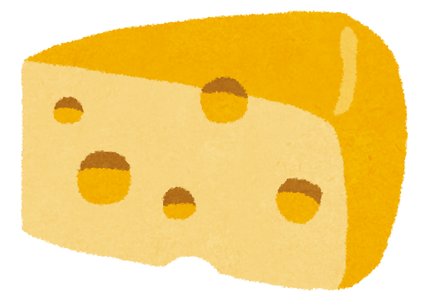
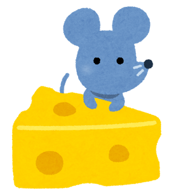
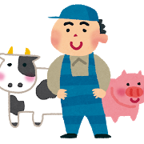
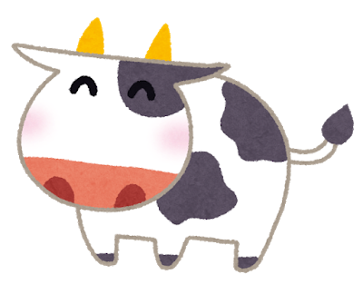
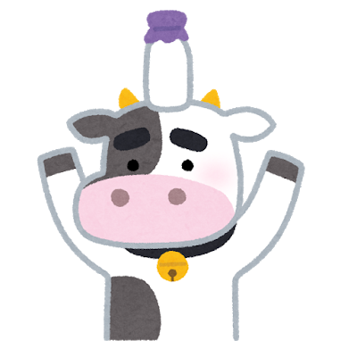
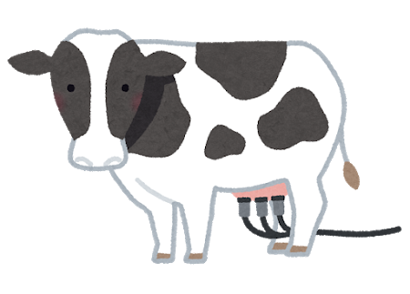

セカイを変えるチーズを作ろう
チーズ職人養成学校「チーズアカデミーTOKYO」
ABOUT
チーズアカデミーについて
チーズアカデミーは、チーズ職人養成学校です。
チーズの素晴らしさを、自給自足を通じて、できるだけ多くの人に知っていただきたい。
そして、食卓にはいつもチーズがあった、あの頃の当たり前をこの手で取り戻したい。
そんな思いから、チーズ職人養成学校「チーズアカデミーTOKYO」は歩みを始めています。
卒業後、チーズ自給自足のバックアップはもちろんのこと、
チーズ職人への就職・転職もサポートします。


- 
- 
- 
- 
- 
- 
COURSE
未経験からでもスタートができるよう、カリキュラムは多くの専門家や
現役チーズ職人のアドバイスのもと、作られました。

本格的な農園を使った実地研修
チーズアカデミーでは、本格的な農園を使った実地研修を
行うことができます。プロとして活躍するチーズ職人も
使用するような、広大で環境も整った農園を余すところ
なく使い、卒業時には本格的なチーズを自分の力で作れる
実践力の養成を目指します。
必要な知識もしっかりと取得
チーズ作りには、しっかりとした食に関する知識が
欠かせません。チーズアカデミーでは、一流講師陣による、
チーズ作りに必要ないろはを余すところなく学べます。
チーズそのものでなく、栄養学全般を学ぶことも
可能ですので、チーズ以外への展開も夢ではないでしょう。


卒業制作はティスティング審査あり
チーズアカデミーでは最後の2ヶ月間で卒業制作を実施。
卒業制作として、チーズ作りを実際に行います。卒業後、
一般参加によるティスティング審査があるため、作り手の
目線だけでなく、消費者の目線から、卒業制作作品としての
チーズを、しっかりと評価いただくことができます。
NEWS
ニュース

2016/11/18
チーズアカデミー卒業生のコスゲさんによるチーズだけをふんだんに使用した話題のピザ屋 「Kosuge Pizza」が渋谷でオープンしました！
2016/11/18
チーズアカデミー卒業生のコスゲさんによるチーズだけをふんだんに使用した話題のピザ屋 「Kosuge Pizza」が渋谷でオープンしました！
2016/11/18
チーズアカデミー卒業生のコスゲさんによるチーズだけをふんだんに使用した話題のピザ屋 「Kosuge Pizza」が渋谷でオープンしました！
ACCESS
会社概要
学校名 チーズアカデミーTOKYO
事務所所在地 〒107-0061東京都港区北青山3-5-6 青朋ビル2F
TEL 03-5413-5045
FAX 03-5413-5046
MAIL dummy@cheeseacademy.tokyo
CONTACT
説明会お申し込み・お問い合わせ
ぜひ1度、足を運んでみませんか。説明会は随時開催中。
その他、お問い合わせもお気軽にどうぞ。お待ちしております。
※チーズアカデミーは実際には存在しません。
間違っても問い合わせしないようお願いいたします。